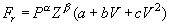
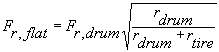
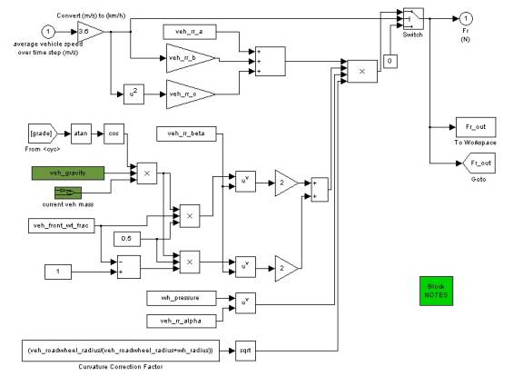

SAE J2452 Tire Model in ADVISOR
ADVISOR 2002 includes a new dynamic rolling resistance model based on the SAE J2452 test procedure and tire rolling resistance data provided by Michelin Americas Research and Development Corporation. The two defining equations used in the model include a calculation of the rolling resistance force (equation 1) and an adjustment of the test data, which is measured on a dynamometer with a curved surface road-wheel, to an equivalent flat-road rolling resistance force (equation 2).
Equation 1:

where:
Fr is the force due to rolling resistance
P is the tire pressure (kPa)
Z is the load on the tire (N)
V is the vehicle velocity (m/s)
a, b, c, alpha and beta are coefficients used to fit the test data to the empirical model described by equation 1.
Equation 2:

where:
Fr,flat is the rolling resistance force from the dynamometer measured value to a flat surface
Fr,flat is the rolling resistance force measured on the dynamometer
rdrum
rtire
Equations 1 and 2 are calculated in the “vehicle” block diagram under the force required to overcome rolling resistance.

The J2452 tire is accessed in the Vehicle Setup Screen by selecting J2452 under Wheel/Axel version. Then an appropriate tire selection can be made for the specific application. Tire data is included for high, medium, and low rolling resistance for various size production tires based on data provided by Michelin. For each tire, the Wheel/Axel m-file contains the a, b, c, alpha, and beta required for equation 1 along with a reference to a typical vehicle application. The tire pressure, rolling radius, and roadwheel radius are also defined in the Wheel/Axel m-file. The vehicle load fraction is defined in the Vehicle m-file.
Example results are shown below comparing the rolling resistance force (Fr) and fuel economy for the ADVISOR default constant rolling resistance (wh_1st_rrc) to results using a low, medium, and high rolling resistance tires. The driving cycle is the EPA Urban Dynamometer Driving Schedule (UDDS).
Documentation Table of Contents
Created: [4/30/02] kk
Last Modified: 4/30/02 kw